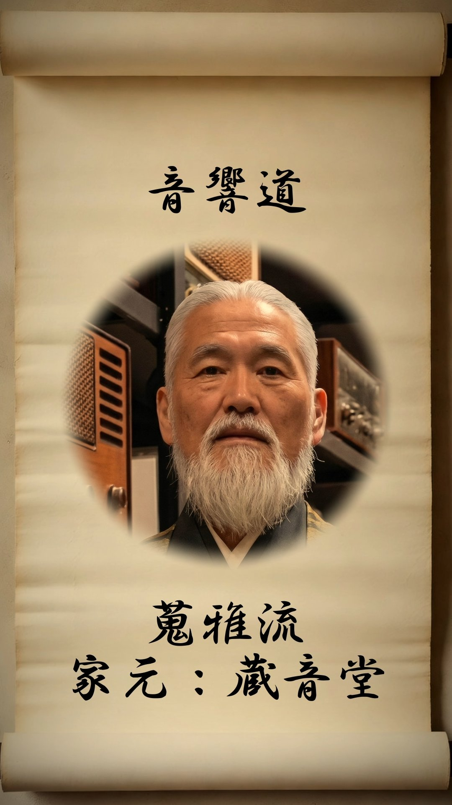
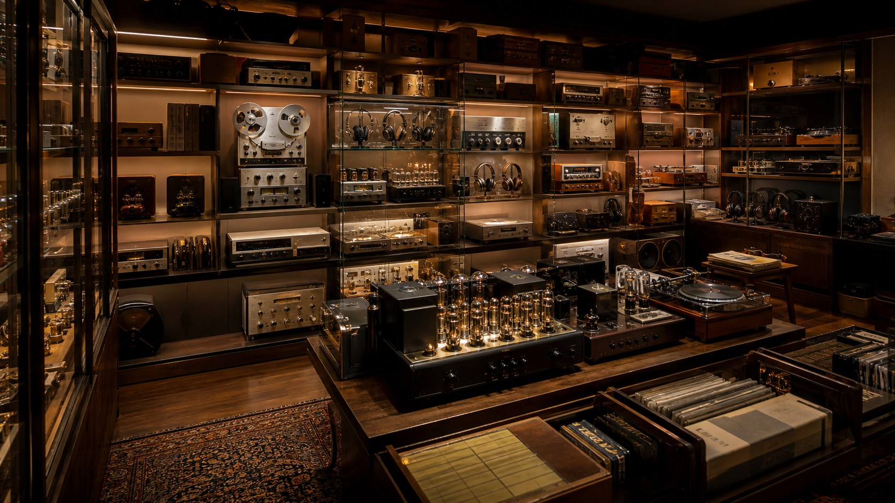

十二流派診断

家元：蔵音堂（ぞうおんどう）
"蒐雅流とは、名器・珍器を蒐め、その希少と由来と連なりを手元に編み上げることを雅とする収蔵の道です。"
蒐雅流において、機材を所有するとは、その機材の物語ごと手元に引き受けることを意味する。廃番となった名機、生産数の少ない限定モデル、著名なエンジニアが手掛けた一点物——それらの希少性と来歴が、コレクションに深みと意味を与える。

この流派の修行者は、中古市場を巡り、オークションを追い、時に海外から機材を取り寄せる。使う予定がなくても「価値ある物を手元に置く」ことに意義を見出す。機材は並べるだけで美しく、蔵に収まることでその価値を発揮する。
向く環境は、専用のオーディオルームや収納棚が完備された機材庫、あるいはショールームのように整然と機材が並ぶ空間など。音を愛でると同時に、物の連なりを編む者の流派である。